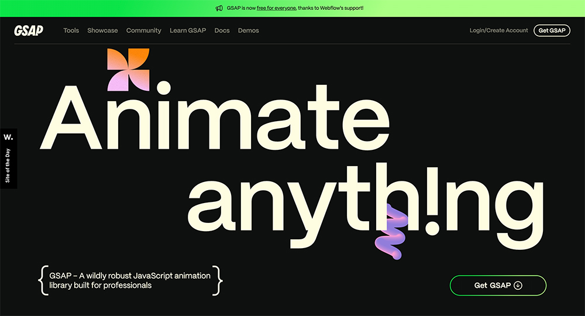
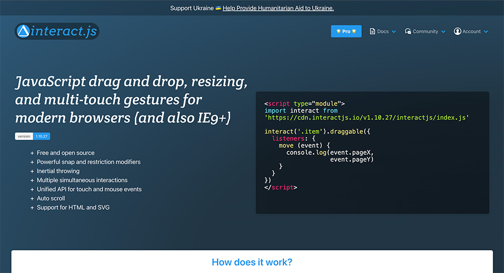
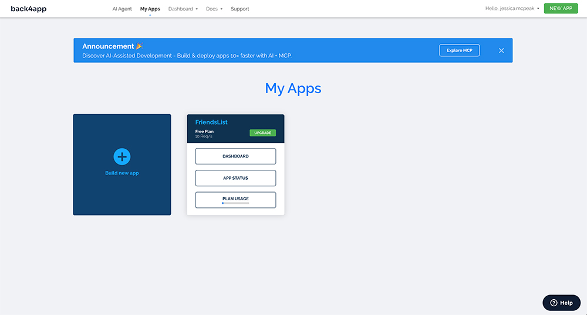

In my project, the user will play the role of a judge who is evaluating what sort of rights an AI being should have based on the kinds of intelligence/consciousness they possess. I would like to have at least two different rounds of the experience, so users can compare/contrast their decisions with each other, and reflect more deeply on why they made the decisions they did. My top priority after quality writing/content is rich and engaging UI, so my tools are mainly UI libraries.
Animations using GSAP

I want to use text and graphic animations to bring life the the UI and add a layer of narrative richness. I'm mainly focusing on the text animations, which have fairly simple syntax in GSAP. Additionally, GSAP has robust documentation that will make learning and problem solving easier. I'm confident that I'll be able to learn it well enough for this project.
Drag and Drop using interact.js

As part of the UI, I want the user to drag and drop various documents that the AI presents as evidence for why they should be given rights. I also want the user to have "accept" and "deny" stamps that they drag and drop onto the case to make their decision feel more tactile and weighty. Interact.js also has pretty good documentation. I'm fairly confident that I'll be able to learn it well enough for this project.
Collecting and showing user decisions using back4app + parse

As an epilogue to the main experience, I'd also like to have a feature where users can see the decisions that other people made. I have some experience with back4app and parse from the assignments we did earlier in the quarter. What I'm planning on doing here is not very different from what we did in those assignments, so I can use them as direct reference if I need to. I'm confident that I'll be technically able to implement this if I have the time after doing the features above.